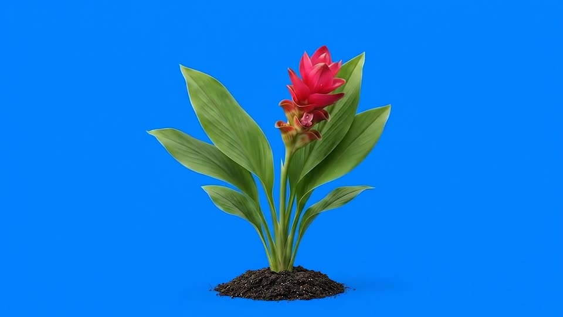

AR ดอกกระเจียวแดง
เปิดกล้องแล้วหันโทรศัพท์ลงที่พื้นกลางห้อง
เริ่มเปิดกล้อง AR
เปิดโหมดกล้องสำรอง
รองรับ Safari บน iPhone และ Chrome บน Android กรุณาอนุญาตกล้องและการเคลื่อนไหว
รอเริ่มเปิดกล้อง…
หันกล้องลงพื้นกลางห้อง แล้วขยับโทรศัพท์ช้า ๆ
วางดอกไม้ตรงนี้
ย้ายตำแหน่ง
ตั้งพื้นใหม่
เล่นใหม่